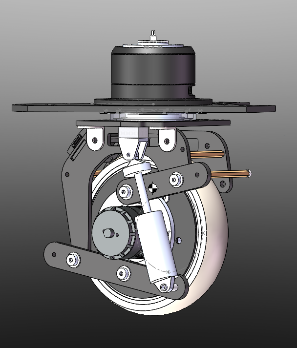
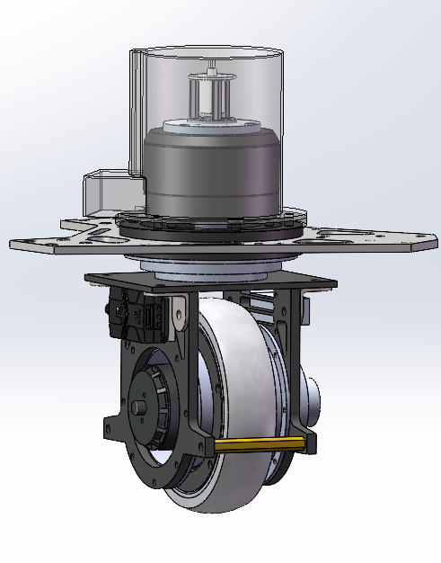
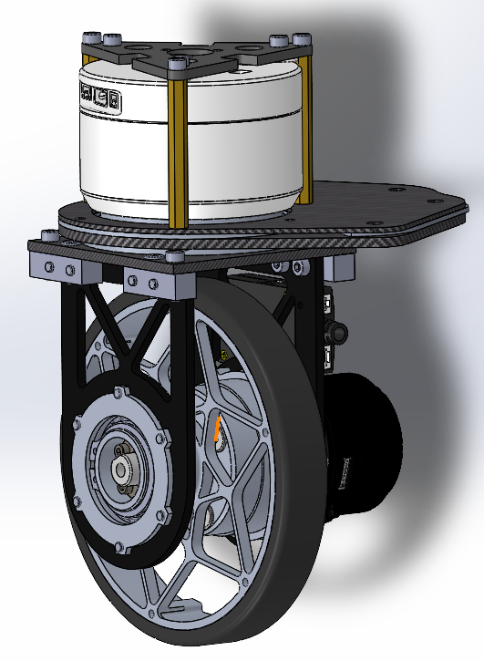
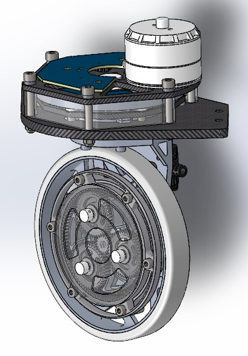
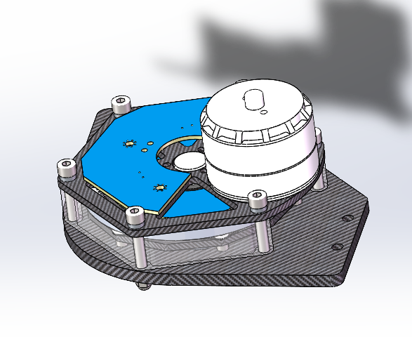
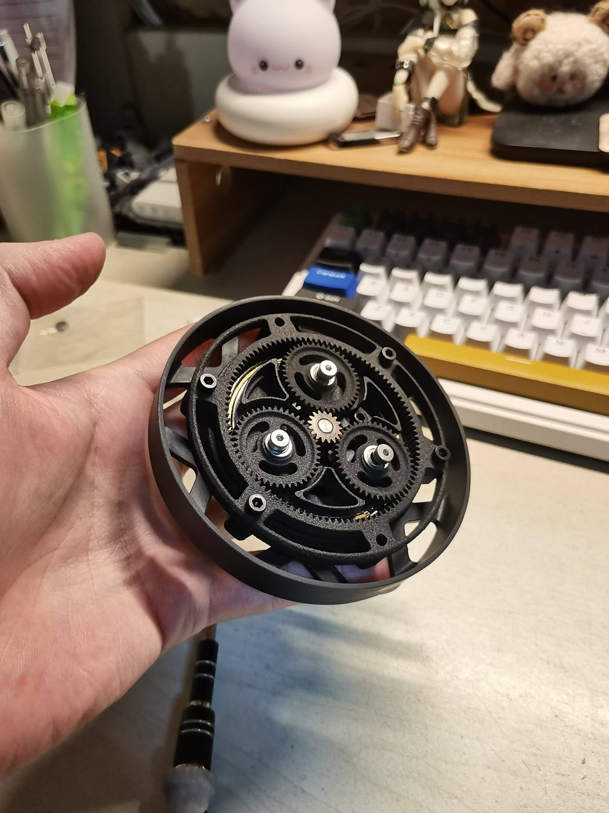
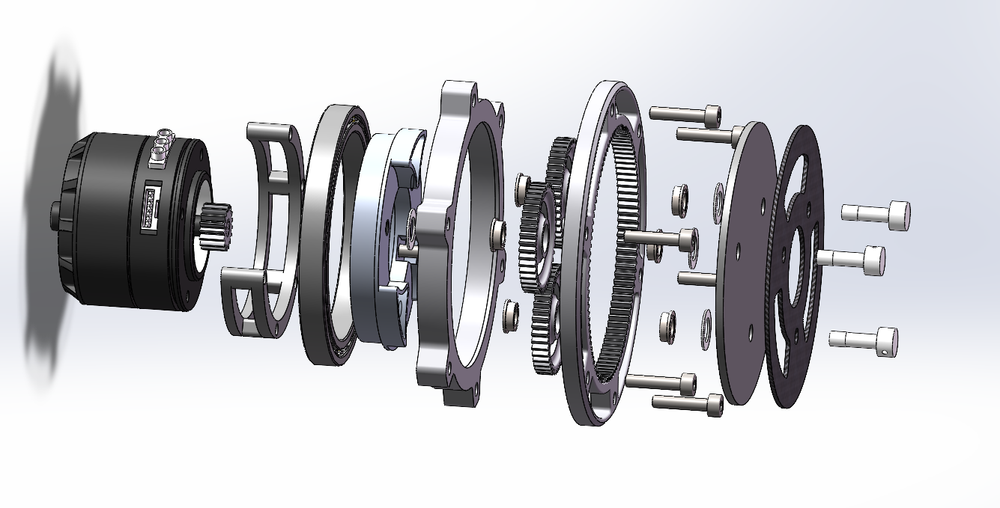

Drivetrain deep dive: four wheel-set generations and a custom planetary gearbox
Sole designer of a complete omnidirectional drivetrain across two seasons — four wheel-set generations and a from-scratch planetary gearbox — now powering the team's sentry and infantry robots.
- Designed the Watt-linkage suspended wheel set (v1); simulated 60 mm links to 42.7 mm of vertical travel at <±0.1 mm lateral deviation, using low-cost FR4 fiberglass links;
- Rebuilt the wheel set for robustness (v2) after field axle failures — removed the Watt linkage, added copper stiffening columns — for reliable running on asphalt, mastic, and tile;
- Integrated and lightweighted the design (v3), merging rim, side-plate and sleeve into single CNC parts and cutting bearing sets 3→1, for a 45.5% mass reduction (2.2 kg → 1.261 kg);
- Built an effective hub motor (v4) by embedding a 1:7 ring-gear stage into a GM6020 hollow motor with a custom magnetic-encoder PCB, eliminating the coupling entirely;
- Designed a from-scratch 2K-H planetary gearbox (10.16:1) sized from measured torque data, cutting chassis spin time from 1.0 s to 0.3 s per revolution.
Why it exists
Mecanum wheels waste power and weight. Across two seasons I designed, broke, and redesigned a complete omnidirectional drivetrain — four major wheel-set versions and a from-scratch planetary gearbox — that now propels the team's sentry and infantry robots.
v1 — Watt-linkage suspension
The first version put the suspension on the driving section of the wheel set through a Watt linkage, tying the steering section rigidly to the chassis frame and reducing unsprung mass. Simulation of the 60 mm links showed 42.7 mm of vertical wheel travel with lateral deviation under ±0.1 mm — enough spring stroke without sacrificing wheel positioning. Links were cut from FR4 fiberglass: far cheaper than carbon fiber at adequate stiffness.
v2 — Robustness rebuild
Field testing broke v1's axle shafting repeatedly — the plug-in axle pots failed under pressure, and the cantilevered driving section threatened to separate under high impact. v2 deleted the Watt linkage and added two copper columns for stiffness. The 130 mm × 20 mm wheels with 7.5 mm of 90A over-molding ran reliably on asphalt, mastic, and tile floors.
Post-2023 analysis
- At ~2.2 kg per set, the wheels pushed the robot to 25 kg and cost roughly 15% acceleration versus rival designs.
- The M3508 P19 motor had torque to spare but capped top speed — the gear ratio was wrong for the duty cycle.
- The motor's 98.4 mm length forced a 71 mm rotational radius on the steering axis, 12.5 mm more than the wheel radius itself.
- No commercial hub motor met the volume, weight, and torque requirements simultaneously — so I had to build one.
v3 — Integration and weight cut
The summer 2023 redesign focused on part integration: expansion sleeves replaced D-shaped couplings, metal right-angle adapters stiffened the driving section, and bearing sets went from three to two, then one — relaxing CNC accuracy requirements and cutting cost. The rim, side plate, and sleeve-fixing parts merged into single CNC pieces. Over-molding thinned to 5 mm at 60A hardness to keep traction. Result: 1.261 kg per set, a 45.5% reduction.
v4 — A hub motor, effectively
The final version integrated a 1:7 ring-gear stage into a GM6020 hollow motor, eliminating the coupling entirely and leaving interior space for the slip ring and a custom magnetic-encoder PCB. The two-board encoder stack mounts on rubber shock-isolation gaskets with five alignment joints, so the boards cannot separate and oscillate under load.
The planetary gearbox
Working backwards from measured hub-motor torque on a ~20 kg robot (~1.5 N·m required), I sized a 2K-H planetary stage with a 119-tooth ring and a final ratio of 10.16:1. A cycloid reducer was considered first for its compactness but rejected — standard parts constrained the design. The single-sided hub doubles as the outer bearing retainer, making the entire reduction stage part of the wheel. All parts are 6061-T6 — an aggressive material choice driven by budget — with 4 mm gear thickness and verified starting-torque redundancy (4.4 N·m at the M3508, 0.232 N·m at the driving section).
Outcome: under comparable conditions, chassis spin time dropped from 1.0 s to 0.3 s per revolution versus the Mecanum baseline.
Media







